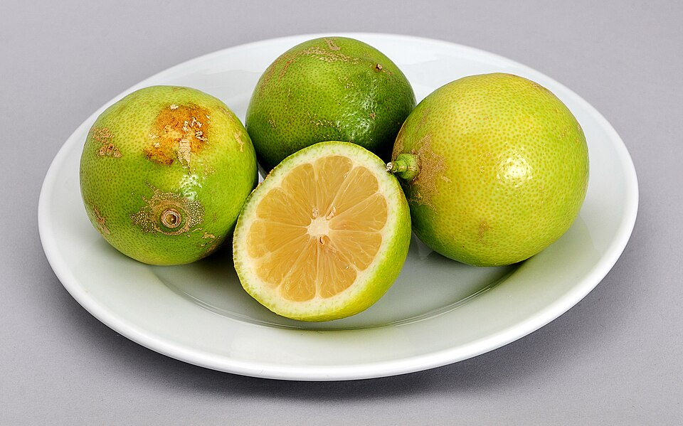

Doces
Suflê de damasco

Ingredientes
- 10 ovos (claras e gemas separadas)
- 10 colheres (sopa) de açúcar (para o suflê) + 10 colheres (sopa) de açúcar (para a gemada)
- 200 g de damasco
- 1 colher (café) de cremor de tártaro
- 1 lata de creme de leite
Modo de preparo
- Cozinhe o damasco e amasse com um garfo.
- Bata as claras em neve, acrescente o açúcar, o damasco e o cremor de tártaro. Despeje em forma untada e enfarinhada e asse até dourar; deixe no forno desligado alguns minutos.
- Gemada: bata as gemas com 1 colher de açúcar cada até bem clara; misture o creme de leite. Sirva com o suflê.
Observação
Pode reservar umas duas colheres de damasco amassado para a gemada. A gemada leva gemas cruas batidas com açúcar.